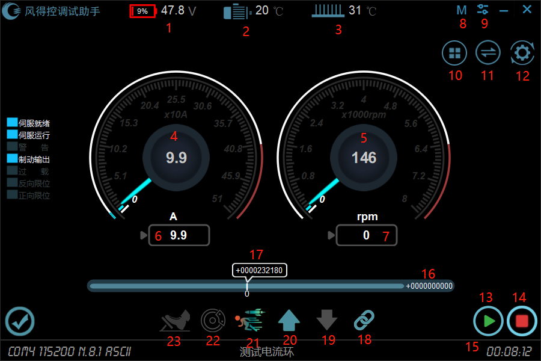
1.母线电压值；2.电机温度值；3.驱动器温度值；4.电流反馈值；5.速度反馈值；6.给定电流值；7.给定速度值；8.工作模式选择；9.设置（语言切换、授权）；10.菜单；11.串口参数配置；12.参数设置；13.开使能；14.关使能；15.开使能后，驱动器开始记录运行时间；16.位置给定值；17.位置反馈值；18.485通讯；19.后退档位；20.前进档位；21.经济模式\暴力模式；22.刹车信号；23.油门踏板。
如下图是驱动器仪表显示界面，显示 6 个常用的参数，分别为功率电压、电机温度、驱动器温度、电流反馈、速度反馈、位置反馈。
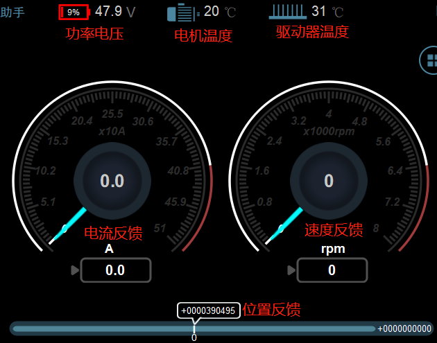
功率电压：在直流供电下一般指直流的母线电压，交流供电下一般是母线经过整流后的电压。
电流反馈：显示的是驱动器的输出电流，单位为安培（A），如果是三相输出，显示的代表 Q 轴电流，三相电流合成力矩的有效值。
速度反馈：指实际电机的实际转速，一般默认设为 RPM (每分钟转速)。
位置反馈：驱动器在位置环情况下，电机相对走动的位置。
(2) 仪表的功能
功率电压仪表只能显示从驱动器里读出来的功率电压值。电流反馈、速度反馈、位置反馈、能读出驱动器里反馈回来的值，同时，也能向驱动器里设置对应参数的值。以电流反馈为例。
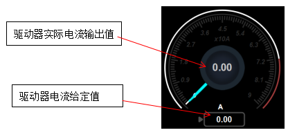
从软件里给定设置电流值，必须把参数列分类“电流环”里的电流给定方式选择设同如下
| 参数名 | 值 | 单位 |
| 电流环给定方式选择 | 0004 | H |
如果速度反馈和位置反馈也要同电流反馈一样在软件上设置， 分别在参数表分类“速度环”、“位置环” 改如下参参数
| 参数名 | 值 | 单位 |
| 速度给定选择 | 0004 | H |
| 位置环给定选择 | 2 | - |
鼠标单击监视器的“工作模式”按钮，将会打开工作模式配置窗口。如下图所示。
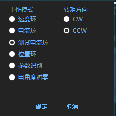
如上图，选择完成后，可以单击“确定”按钮，即可设置。
工作模式：工作模式的分类有 6 种，如上图所示。
转矩方向：可以设置电机的转速方向。
状态显示蓝色代表功能正常运行，红色代表异常，无色代表此功能没起作用，如下图:
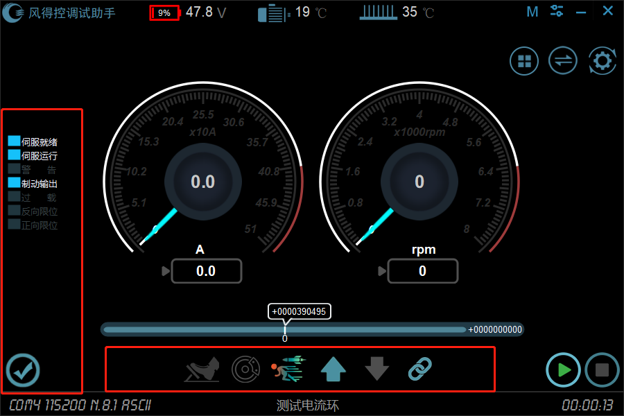
| 状态信息 | 功能 |
| 伺服就绪 | 当设备无任何故障状态时，伺服就绪可以启动运行。 |
| 伺服运行 | 伺服就绪开使能就能运行伺服，当故障发生时会自动关闭使能。 |
| 警告 | 当有任何故障时就发出警告。 |
| 制动输出 | 伺服运行时就有制动输出，属于驱动器输出信号。 |
| 过载 | 电流超过电机额定电流值开始累计计算过载时间，若直接出最大电流符合Q=I²t。 |
| 反向限位 | 反向运转处于反向限制运行状态。 |
| 正向限位 | 正向运转处于正向限制运行状态。 |
故障显示红色代表异常，无色代表此功能没起作用，如下图。
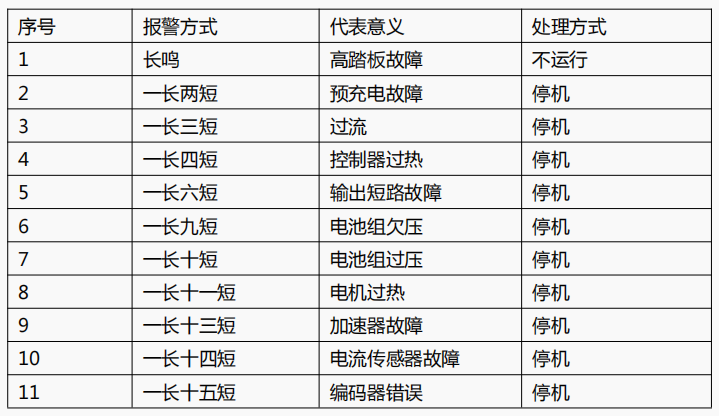
开使能：当伺服驱动器就绪时，可以通过开使能来控制驱动器运行，当驱动器运行时，状态栏里的伺服运行变为绿色。
关使能：当伺服驱动器运行时，可以通过关使能来关掉伺服驱动器的运行。开使能和关使能的逻辑可以通过地址 1008 来设置。
工作模式：已在前面小节介绍。
在主界面点击“参数设置”，打开的窗口为参数表的功能主界面，如下图
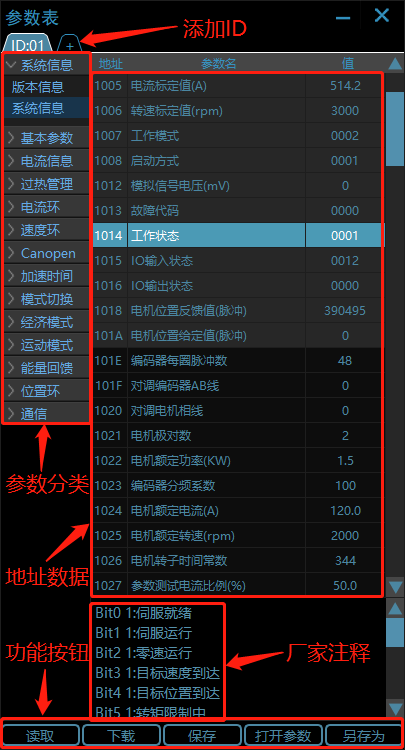
参数表数据分为几类
(1) 如下图:
打开参数：从本地路径打开一份参数到参数表，可进行下载并保存到驱动器EEPROM。
保存：把参数保存到驱动器内部储存芯片，确保掉电不丢失。
下载：将当前或者打开的参数数据下载到驱动器。
读取：向驱动器读取数据。
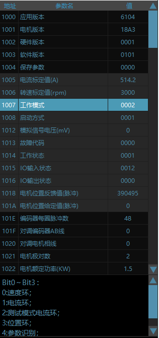
(2) 修改参数表地址数据
鼠标双击参数表表格“值”一列，即可以写入数据，数据的单位和可输入范围可以参考参数名尾或者注释。同时，可以在下方看到该地址数据的厂家注释。
输入完成后，按回车键，即可完成输入；如果输入成功，会提示 参数写入完成！
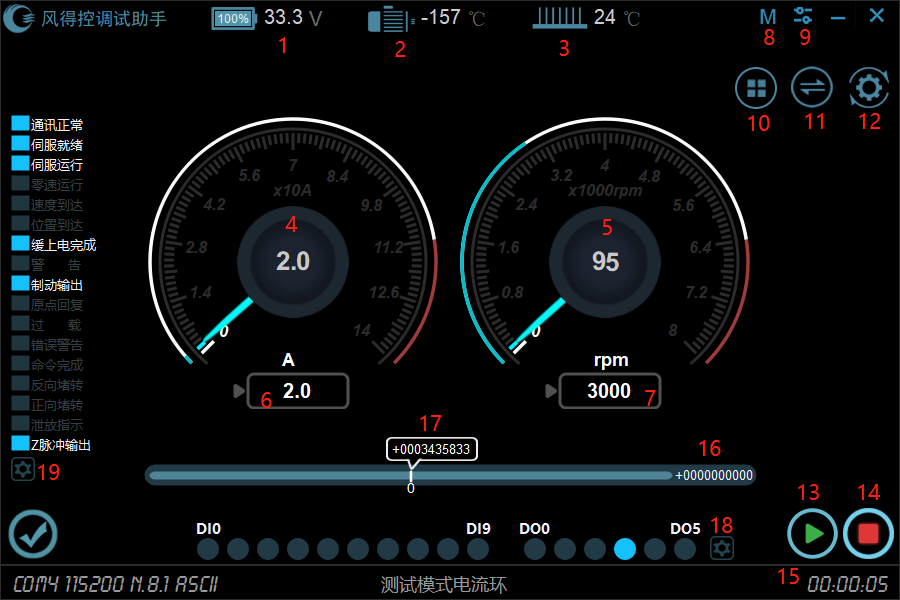
1.母线电压值；2.电机温度值；3.驱动器温度值；4.电流反馈值；5.速度反馈值；6.给定电流值；7.给定速度值；8.工作模式选择；9.设置（语言切换、授权）；10.菜单；11.串口参数配置；12.参数设置； 13.开使能；14.关使能；15.开使能后，驱动器开始记录运行时间；16.位置给定值；17.位置反馈值；18.DI/DO配置；19.警报配置。
如下图是驱动器仪表显示界面，显示 6 个常用的参数，分别为功率电压、电机温度、驱动器温度、电流反馈、速度反馈、位置反馈。
功率电压：在直流供电下一般指直流的母线电压，交流供电下一般是母线经过整流后的电压。
电流反馈：显示的是驱动器的输出电流，单位为安培 （A），如果是三相输出，显示的代表 Q轴电流，三相电流合成力矩的有效值。
速度反馈：指实际电机的实际转速，一般默认设为 RPM (每分钟转速)。
位置反馈：驱动器在位置环情况下， 电机相对走动的位置。
(2) 仪表的功能
功率电压仪表只能显示从驱动器里读出来的功率电压值。电流反馈、速度反 馈、位置反馈、能读出驱动器里反馈回来的值，同时，也能向驱动器里设置对应参数的值。以电流反馈为例。
从软件里给定设置电流值，必须把参数列分类“电流环”里的电流给定方式选择设同如下
| 参数名 | 值 | 单位 |
| 电流环给定方式选择 | 0004 | H |
如果速度反馈和位置反馈也要同电流反馈一样在软件上设置， 分别在参数表分类“速度环”、“位置环” 改如下参参数
| 参数名 | 值 | 单位 |
| 速度给定选择 | 0004 | H |
| 位置环给定选择 | 2 | - |
如下图所示。在监视器窗口里点击“DI/DO 配置”按钮，将弹出 DI/DO 配置子窗口。
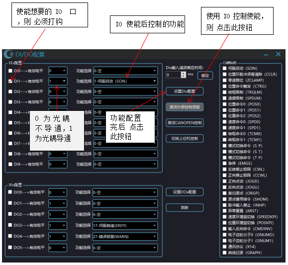
DOx 的配置和 DIx 的配置配置一样，配置好后参数表分类 “DI/DO/参数” 里的地址 1133~1142 参数名 DI0~DI9 和 DO0~DO5 的值会相应的改变， 在数据表里点击保存，确保数据保存成功。再次上电时，首先打开“参数表”，读取参数表，让参数表读完数据，再打开“DIx/DOx 配置”点击刷新，看数据是否保存上一次的配置参数。
如下图所示，驱动器的外部接口 IO 信息，有 10 个输入 IO 和 6 个输出 I0 都经过光电隔离处理。当光耦不导通时为灯熄灭，光耦导通时为灯点亮。
如果配置 16 个 IO 的状态和功能，点击监视器窗口里的“DIx/DOx 配置”会弹出上述所示的窗口，然后可以进行根据上一节设置。
鼠标单击监视器的“工作模式”按钮，将会打开工作模式配置窗口。如下图所示。
如上图，选择完成后，可以单击“确定”按钮，即可设置。
工作模式：工作模式的分类有 8 种，如上图所示。
转矩方向：可以设置电机的转速方向。
状态显示蓝色代表功能正常运行，红色代表异常，无色代表此功能没起作用，如下图
| 状态信息 | 功能 |
| 通讯正常 | 当设备持续与上位机联系通讯时，如果通讯超时，表示设备与上位机通讯断开 |
| 伺服就绪 | 当设备无任何故障状态时，伺服就绪可以启动运行。 |
| 伺服运行 | 伺服就绪开使能就能运行伺服，当故障发生时会自动关闭使能。 |
| 零速到达 | 电机转速到零所能允许的误差可在参数表里。地址 1055 零转速到达误差里设置 |
| 目标速度到达 | 电机转速和给定转速相同，所能运行的误差可在参数表里地址:1056 目标转速到达误差里设置 |
| 目标位置到达 | 电机所转的行程达到给定的位置，所能允许的误差可在参数表里 地址：1076 位置到达误差范围里设置 |
| 缓上电完成 | 当驱动器首次上电完成，指示灯亮起时，通讯状态栏缓上电完成指示点亮 |
| 警告 | 当有任何异常时就发出警告 |
| 制动输出 | 伺服运行时就有制动输出，可在 DOx 里选，转继电器控制电机抱闸。可在地址 1031 和 1032 里修该开启和关闭延时。 |
| 原点回复完成 | 根据地址 1088 来设置原点回复寻找原点完成 |
| 超过载门槛 | 电流超过额定电流值开始累计计算过载时间，若直接出最大电流符合Q=I²t在地址 1022 可设置 |
| 错误报警 | 当发生故障时就报错误报警 |
| 命令完成 | 当前模式下的操作指令完成动作后点亮 |
| 反向堵转 | 反向运转转不起来，处于堵转状态 |
| 正向堵转 | 正向运转转不起来，处于堵转状态 |
| 泄放指示 | 当驱动器处于泄放时，泄放指示灯点亮 |
| Z脉冲输出 | 上电电机运转，一圈输出一个Z脉冲 |
故障显示红色代表异常，无色代表此功能没起作用，如下图。
| 故障信息 | 功能 |
| 电源欠压 | 功率电压低于欠压保护点，电压欠压保护点地址 1283 |
| 位置异常 | 当驱动器位置环控制时，位置反馈值（监视器）超过±2063597567（0x7afffff）溢出后，报此故障，其最大域值为-2147483648~2147483648。 |
| 反馈错误 | 一般在旋变模式下不接任何反馈就报反馈错误 |
| 过流 | 电流超过最大电流值在地址 1020 可设置 |
| 超载 | 电流超过最大电流值直接报过载，电流在最大电流值和额定电流值之间是根据过载时间换算出实际的过载时间。参数修改地址为 1020、1022、1023。 |
| EEPROM 故障 | 外部 EEPROM 有故障 |
| IGBT 故障 | 硬件驱动故障保护，一般指硬件过流保护 |
| 驱动器过热 | 驱动器超过报警温度在地址 127D 、127E 可设 |
| 电机缺相 | 电机驱动线没接完或没接好 |
| 电流超差 | 显示电流和给定电流误差大于电流超差值。 |
| 速度超差 | 在超差检测时间内显示速度和给定速度误差大于速度超差值参数地址为 1057、1058 |
| 电机过热 | (暂无此功能) 电机的温度高于报警温度。参数地址 10C2、10C3、10C4 |
| 电源过压 | 电源电压高于功率电压设置的过压点,参数地址 1284 |
| 锁定 | 锁定故障；当下次触发选中的故障时直接锁定故障并不恢复需手动解除 |
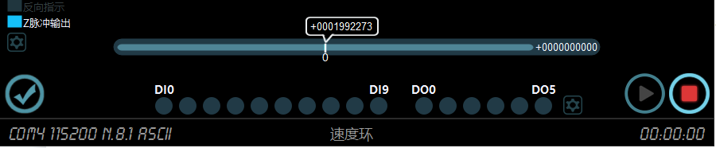
开使能：当伺服驱动器就绪时，可以通过开使能来控制驱动器运行，当驱动器运行时，状态栏里的伺服运行变为蓝色。
关使能：当伺服驱动器运行时，可以通过关使能来关掉伺服驱动器的运行。开使能和关使能的逻辑可以通过地址 1008 来设置。
DI/DO 配置、工作模式：已在前面小节介绍。
在主界面点击“参数设置”，打开的窗口为参数表的功能主界面，如下图
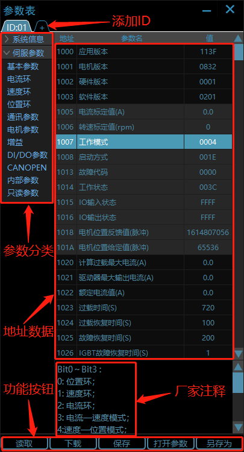
参数表数据分为几类
(1)：如下图
打开参数：从本地路径打开一份参数到参数表，可进行下载并保存到驱动器EEPROM。
保存：把参数保存到驱动器内部储存芯片，确保掉电不丢失。
下载：将当前或者打开的参数数据下载到驱动器。
读取：向驱动器读取数据。
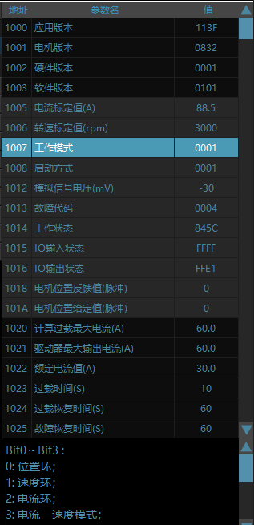
在主界面点击“警报”，将会打开警报配置的界面，如下图
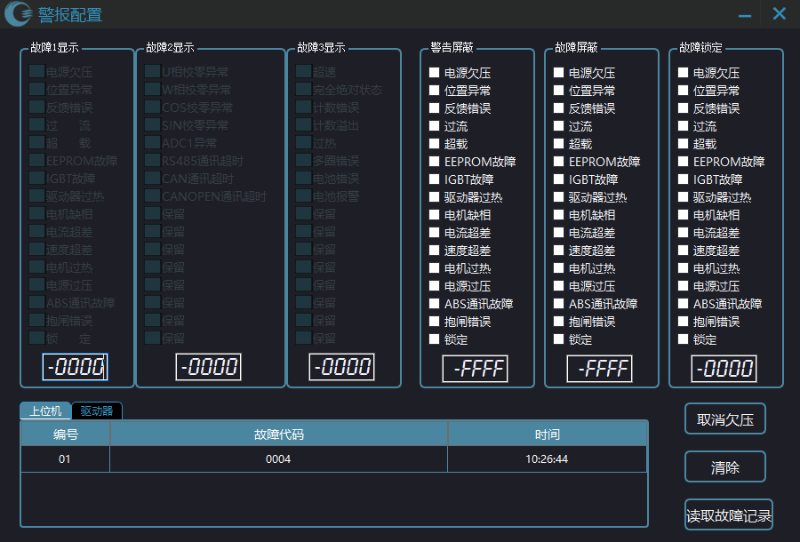
鼠标单击关闭窗口后重新打开会刷新当前状态。
窗口下面为故障代码出现的时间、故障号码的记录，鼠标单击 “取消欠压” 按钮，故障“电源欠压”会被屏蔽掉。
单击 “清除” 按钮会清除当前上位机的故障信息，不会清除驱动器的故障信息。鼠标单击 “读取故障记录” 会读取储存在驱动器的历史故障记录，10条故障信息，新故障信息会由上往下覆盖掉。